1995 〜 1999
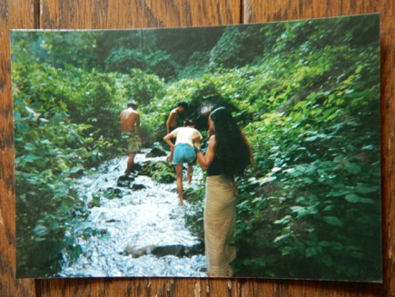


1995 阪神大震災チャリティー
with 叫ぶ詩人の会と仲間達
1995年. Big Earthquake に遭って ”叫ぶ詩人の会” の関係の人達や 高円寺の仲間達と
チャリティーコンサートをやった.
渋谷ON AIR WESTや下北沢のLIVE HOUSEなどでやって 総額200万円位集まった.
それを 縁のある人達に寄付をした. けれど ボランティア詐欺にも遭った.
知人だから信用したのに。。。
それからチャリティーをやる時には. そのお金がどう使われるか という事に
凄くこだわるようになった.
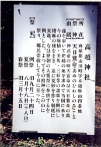

チャネリング？セレモニーライヴ 1996


Beach party 1997

Singing Bowl の音はすべてにとって良い波動だ. と思って
1996〜97年頃 気が向いたら
新宿西口に布を敷いて シンギングボウルをまわしていた.
（タンプーラは音が小さすぎて 街中では響かなかったので）
最初はいつも ホームレスのおじさんが 場所をあけてくれてまわしだしていた.
ただ Singing Bowlをまわしているだけなのに.
普段 接することのない 学生やオフィスで働く人達が話かけてきて.
人生相談をしたり たわいもない話をしたり
泣き出す人や 握手してくる人や いろんな人がいた.
でも最後はいつも 皆でバンザイして 感動のなか帰っていくことが多かったな.
あ でもこの頃 私は家なしで.
帰るといっても 友達の家を転々としていたり 公園で寝たり
あちこちを放浪していた.


Singing with a Santoor at Mutant Tune 1997
Yamanashi
はじめて野外Partyで 飛び入りでステージで歌った.
おわって目を開けたら 人がいっぱいいて.
寒いから と コートを掛けてくれたり.
摘んで来た野の花を花束にして プレゼントしてくれたり.
とても幸せな気分だった . *
この一週間後 ある事件に巻き込まれて.
ショックのためか パッタリ歌わなくなった。。。

1999
と いいつつ 友達の Live Party でPerformanceした.
“新月の気持ち” で 微かな倍音 Silent Overtone で歌った.
なんだかんだ といっても. 私は元気に楽しく暮らしていた が.
1999年の Summer Solstice 夏至の日の出のすぐ後に. フッとしたことでバランスを崩し.
長ーーーい迷宮 Labyrinth に入っていく。。。

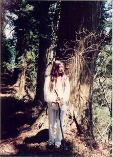
’95 のChristmasに 不思議な出会いをした INDIAの楽器Tampuraと共に.
気がついたら 日本の中を Hitchhikeとか 18切符で
ぐるぐる巡っていた.
2005年にJAWAでBig Earthquake があった. そのとき 友達が JAWAに留学していたので.
みんなに呼びかけて チャリティーコンサートを開き. お金を送った.
(集まった金額は 55,555円！)
最初 美術館の修復の寄付に送られる事になるはずだったけど.( これも良い案だったけど )
阪神大震災の時の 無念をはらしたい と思い.
“ もっと 命に関わる事に使おう “ と みんなで相談した.
そこは農村で 食べ物には困らない ということ.
1999年に Bali に行った時 全然物価が違ったので.
日本で小さなお金でも もっと可能性はある ということ.
（その時、素敵な竹細工の日用品を、とても安く買った.）
そして コンクリートの下敷きにになって 亡くなられた方が多かった.
という記事があったので.
昔ながらの 生活を思い出して欲しい という 意味合いも込めて.
次々と生える 竹 なら 自然破壊にならないだろう. と “ Bamboo House “ を送ることにした.
私たちのチームからは 5軒. そして 他にもボランティアの人達が
現地にいっぱいいたらしく. 結構な数の Bamboo House が 送られたらしい.
友達は 現地の人達に感謝されて 新聞にも載ったらしい.
そして日本でも 私たちのやり取りをネットで観た若いコ達が
触発されて ボランティアをやりだす動きもあった.
私はアイディアを出すだけで 動いたのは 若いコ達だったけれど.
それぞれの得意分野を持ち寄って.
阪神大震災の時の失敗が みんなの力で アルケミーされた感じで. 嬉しかったな.
小さな. でも その時の 私たちの心の中では 大きな喜びのお話し.
＊ チームは、あだっち と スッダ と しおり と 私の４人でした.
チャリティーコンサートには、野毛乱 が友情出演してくれました.
ありがとう〜 ♡
1996 四国


剣山
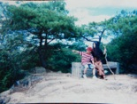
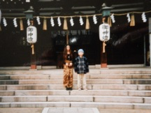
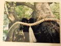
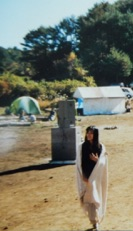
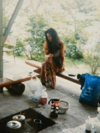
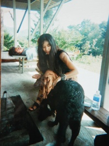
Campの日々
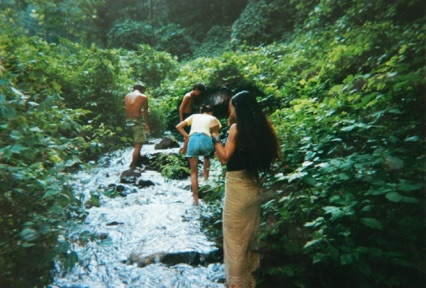

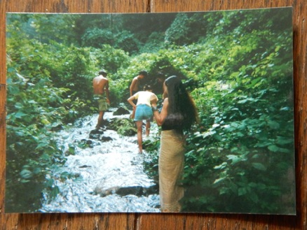